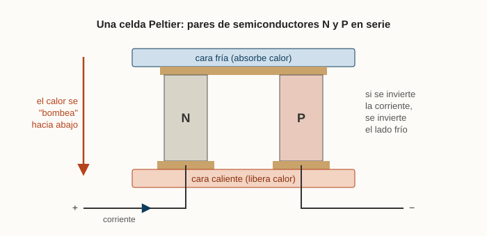
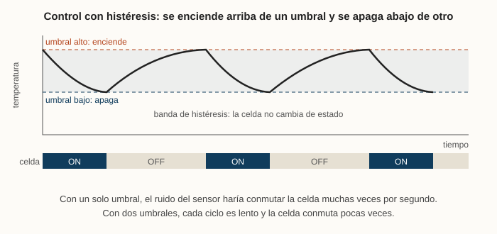

2020 · Arduino · Control
Una heladera Peltier con piezas de PC viejas
En 2020 compré mi primer kit de Arduino Uno. En los primeros años de la carrera no encontraba la práctica que buscaba, así que decidí armar un proyecto por mi cuenta, afuera de la facultad.
El efecto Peltier
Una celda Peltier es una placa fina formada por muchos pares de semiconductores, unos tipo N y otros tipo P, conectados en serie. Cuando circula corriente por ellos, una cara absorbe calor y la otra lo libera: la celda no genera frío, mueve calor de un lado al otro. Si se invierte el sentido de la corriente, se invierten las caras.

Tiene una ventaja para una heladera chica: no hay compresor, ni gas, ni partes móviles. Y una limitación que condiciona todo el diseño: la cara caliente tiene que disipar el calor que sacó del interior más el que genera la propia celda (por efecto Joule). Si no se evacua bien, la cara caliente sube y la fría deja de enfriar. Por eso usé disipadores y ventiladores de PC viejas.
Qué armé
Construí una heladera con componentes de PC viejas: la celda, un disipador con ventilador del lado caliente y una caja aislada. Un Arduino lee la temperatura interior y decide cuándo encender la celda.
Por qué un control con histéresis
El control más simple sería encender la celda cuando la temperatura pasa de un valor y apagarla cuando baja de ese mismo valor. En la práctica, cerca de ese valor el sensor tiene ruido y la temperatura cambia de a poco, así que la celda se encendería y apagaría muchas veces seguidas.
Eso es malo por tres razones: desgasta los componentes (cada ciclo es un cambio térmico y eléctrico), es innecesario porque la temperatura casi no cambió, y es poco eficiente porque cada arranque tiene un pico de consumo antes de enfriar.
La solución es usar dos umbrales. La celda se enciende cuando la temperatura sube hasta el umbral alto y recién se apaga cuando baja hasta el umbral bajo. Entre los dos queda una banda donde no cambia de estado.

El ancho de la banda es un compromiso: una banda angosta mantiene la temperatura más constante pero conmuta más seguido, y una ancha conmuta menos pero deja que la temperatura varíe más.
Qué me llevé
Fue el año en que empecé a usar Onshape (CAD 3D) y KiCad (PCB), dos herramientas que vi en primer año y que reutilicé en casi todos mis proyectos siguientes. También fue mi primer contacto real con un lazo de control cerrado y con el problema de hacer que un sistema conmute lo menos posible.
Para completar: temperatura mínima alcanzada, valores de los dos umbrales y qué sensor usaste.